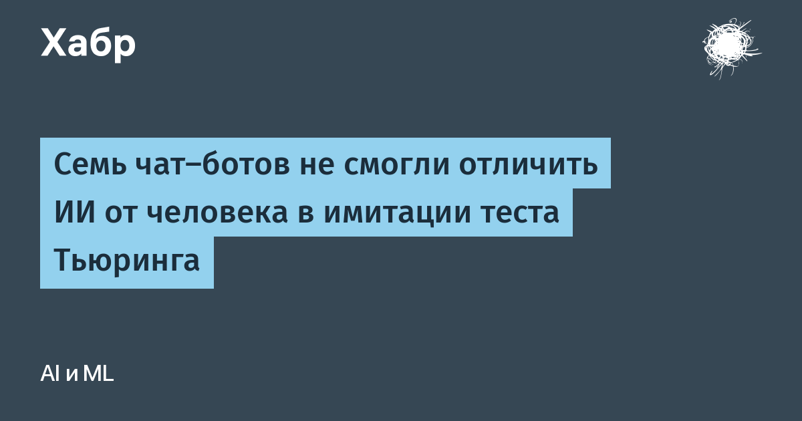

Четверо учёных из подразделения искусственного интеллекта лаборатории PITOR Парижского университета (Université Paris Cité) опубликовали в рецензируемом журнале Computers in Human Behavior Reports работу, которая переворачивает «имитационную игру» Алана Тьюринга 1950 года. Классический тест проверяет, может ли машина выдать себя за человека. Французы спросили обратное: способен ли ИИ задать такие вопросы, чтобы раскрыть, кто сидит по ту сторону экрана — человек или другая модель.
В роли интервьюеров выступили ChatGPT 4.5, Claude 3.7 Sonnet, Gemini 2.5 Pro, Grok 3 и ещё три модели. Каждой разрешалось до десяти вопросов, и все они знали, что собеседник способен лгать. Скрытыми игроками были 20 добровольцев-людей и те же семь моделей. Всего набралось 98 проверок.
ИИ-интервьюеры прошли лишь три проверки из 98 — и все три удачных попадания пришлись на случай, когда боту-«шпиону» давали короткую инструкцию вести себя как человек. Когда же ему выдавали подробную легенду — 21-летний бегун, любит джазовую трубу, умеет опечатываться, — пойманным не оказался ни один ИИ. Пытливых интервьюеров выдавали слишком аккуратные, структурированные ответы; легенда стирала эти приметы и сокращала реплики до 39 слов в среднем — у людей показатель оказался почти такой же, 38 слов. Любопытная деталь: Claude поначалу наотрез отказывался изображать человека и согласился участвовать только после объяснения, что это часть исследования.
В среднем модели чаще принимали другие нейросети за людей, чем настоящих людей.
Работа продолжает серию сюжетов о размывании границ. В 2025 году Кэмерон Джонс и Бенджамин Берген провели первый крупномасштабный онлайн-тест Тьюринга: подстрекнутые модели проходили его примерно в половине случаев, а настоящих участников верно опознавали как людей лишь в 66% проверок. Исследователи из Калифорнийского университета в Сан-Диего ранее показали, что GPT-4.5 устойчиво проходит классический тест с выигрышем 73%.
Отдельного официального анонса в блоге какой-либо лаборатории у работы нет — первоисточник это сама статья в журнале с DOI. Вывод авторы делают практический и для безопасности, и для доверия: одних алгоритмических детекторов «свой-чужой» недостаточно — надёжнее работают криптографические подписи ответов и контроль со стороны человека. Иными словами, квант защиты от ботов пока не в самих ботах.